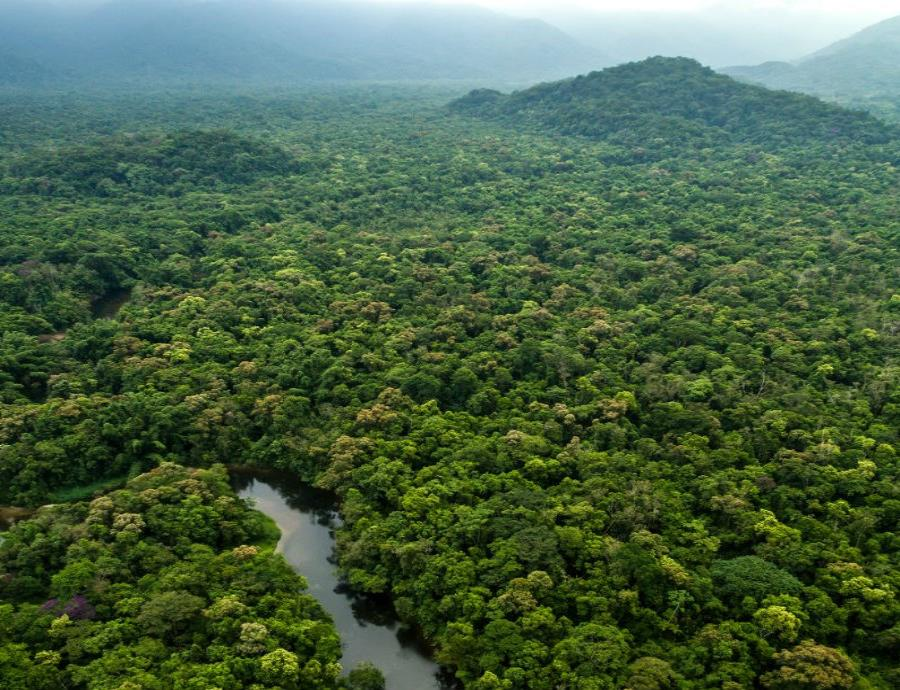

La Amazonia que echa pulsos al poder para protegerse y cuidar el medio ambiente
La comunidad de São Francisco do Mainã, que paró un proyecto de superpuerto, ilustra la labor de la Iglesia católica para defender a los más vulnerables y preservar la naturaleza

Al escuchar al brasileño Francisco da Silva, 61 años, que ha vivido toda su vida a orillas de un afluente del río Amazonas, cuesta creer que solo fuera a la escuela hasta sexto curso. Aunque él mismo lo matiza. “En realidad, más que ir a la escuela, visité la escuela”, apunta este veterano de luchas varias en defensa de las tierras que habita con sus vecinos desde hace generaciones. Primero fue la batalla de esta comunidad contra el Ejército para que a comienzos del XXI la luz llegara a la aldea.
Después para que se les reconociera el derecho sobre las tierras donde sus antepasados están enterrados desde al menos finales de XIX. Sin estatus legal, no hay protección, ni servicios públicos ni posibilidad de emprender un litigio. Es no existir como colectivo a ojos de las autoridades. La Iglesia católica ha acompañado, a través de Cáritas, a Da Silva y a las 55 familias que forman la comunidad de São Francisco do Mainã en esos pleitos. De entre las misiones emprendidas por el catolicismo en estas tierras, es probablemente la que más molesta al presidente Jair Bolsonaro.

Las vicisitudes de esta aldea ilustran por qué el Papa ha convocado un sínodo dedicado a la región que acoge el mayor bosque tropical del mundo, que ha inaugurado este domingo en el Vaticano con críticas a “los fuegos impulsados por el lucro que han devastado la Amazonia”. Tras reconocer el papel de la Iglesia católica en la colonización, ha proclamado: “Dios nos guarde de la avaricia de los nuevos colonialismos”. Un discurso que choca frontalmente con el del presidente brasileño que esta misma semana advirtió: “El interés en la Amazonia no es el indio o el puto árbol, son los minerales”.

Durante tres semanas, 184 obispos y 35 invitadas sin derecho a voto debatirán si abrir la puerta a los curas casados y a las diáconas, pero también cómo proteger a los 37 millones de personas que viven en esta región que se extiende por nueve países y tiene un tamaño superior a la Unión Europea. Para la jerarquía eclesiástica local la justicia social es indisociable de la preservación ambiental y el trabajo pastoral. “Nuestra misión también es ayudar (a las poblaciones más marginadas) a que se organicen, despertarlos a la ciudadanía para que reclamen sus derechos, para que acudan a los tribunales y reclamen a sus diputados”, explica en Manaos el diácono permanente Afonso Brito, de Cáritas.
“Tuve que ir a Brasilia al menos tres veces”, recuerda el aldeano Da Silva sobre sus litigios, sentado en círculo junto a otros vecinos (varios de su propia familia) con los que comparte la gestión comunitaria. A dos pasos, una capilla católica. Cuando lograron legalizar sus tierras “fue cambiando el rumbo y las piezas comenzaron a encajar”, asegura. Por eso las poblaciones nativas y quienes defienden sus derechos ven con profunda preocupación la promesa del presidente de Brasil de no “demarcar un centímetro más de tierra indígena” que reiteró ante el mundo en septiembre en la Asamblea General de Naciones Unidas.
El Consejo Indigenista Misionero (CIMI), vinculado a la Conferencia Episcopal brasileña, reveló recientemente que, según datos preliminares, las invasiones de tierras indígenas se han duplicado con el ultraderechista en el poder, un incremento que vincula con su discurso. Adriana Acevedo, una de las coordinadoras regionales de la CIMI, sostiene en Manaos que “los indígenas de todo Brasil viven una situación extremadamente preocupante desde el momento en que un Gobierno de extrema derecha, fascista, que ya en campaña prometió que no demarcaría más tierra indígena, que se esforzaría para revisar la ya demarcada y abrir las tierras que los indígenas tienen en usufructo exclusivo, según la Constitución, para que sean explotadas por terceros”, recuerda en un receso de una reunión preparatoria del sínodo que empieza el próximo día 6 en Roma. Para ella la amenaza es clara: “Propone un Gobierno mínimo con máxima libertad para los poderes económicos”, algo que la Iglesia católica considera intolerable. A sus ojos, los indígenas deben decidir cómo quieren vivir en esas tierras.
Acevedo explica que, como muestran las imágenes de satélite, las áreas donde la Amazonia está mejor conservada coinciden precisamente con las reservas indígenas. “Ellos hacen un servicio a la humanidad”, sostiene antes de hilar un discurso demoledor contra el sector agropecuario —el motor de las exportaciones— porque “no produce alimentos, está basado en el monocultivo de soja, etanol… que usa pesticidas que afectan a la salud”. Con un presidente que criminaliza a las ONG, los activistas viven en un clima intimidatorio. Subraya que el sínodo “también es un mensaje político al mundo de que la Iglesia está junto a los pobres”.

La comunidad de São Francisco do Mainã, en un afluente del Amazonas.
La última, por ahora, de las batallas emprendidas por la comunidad de São Francisco do Mainã fue para impedir la construcción de un superpuerto —“un polo naval, logístico, minero… le fueron cambiando de nombre”— que hubiera supuesto su expulsión de este rincón de la Amazonia al que se llega en media hora larga de lancha después de una hora de coche desde Manaos. Ellos y otra veintena de comunidades ribereñas que suman unos 5.000 vecinos consiguieron que los tribunales pararan el proyecto portuario.
Desde que el mundo dio la voz de alarma por los incendios de la Amazonia este agosto, Bolsonaro ha replicado con un discurso en defensa de la soberanía de la Amazonia ante lo que considera una treta de Gobiernos extranjeros que solo persiguen apropiársela y arrebatársela a los brasileños. El ultraderechista considera que Brasil debe explotar las inmensas riquezas que existen en la Amazonia, incluso bajo las tierras legalmente protegidas por su valor ecológico; suele insistir en que Brasil tiene las leyes ambientales más rigurosas del mundo, pero es precisamente esa legislación la que sus críticos le acusan de desmantelar.
“Éramos analfabetos, no sabíamos cómo lidiar con estas situaciones, pero empezamos a aprender leyes, nuestros derechos…”, recalca Da Silva. Fueron mejorando su estrategia. Y gracias a personas como Antonio Fonseca, de Cáritas, han ido ampliando su red hasta el punto de que tras muchos años tienen la colaboración de la Fiscalía, la Universidad e incluso Embrapa, un organismo oficial de investigación agrícola que les ayuda a diversificar sus cultivos para producir a mayor escala de manera sostenible con la mira puesta en comercializar los excedentes.
Producir más pero sin romper el equilibrio ecológico. Porque el cambio climático ha llegado en forma de menos peces y un calor abrasador a São Francisco do Mainã, cuyos vecinos viven de lo que el río y 387 hectáreas de tierra les dan. “Solo podemos trabajar la tierra hasta las nueve, antes podíamos hasta las doce o así”, recuerda uno de los veteranos.
Da Silva responde a las críticas de quienes contraponen preservación y progreso: “No es que estemos contra el desarrollo de nuestro Estado, de nuestro país. Estamos contra la degradación de la naturaleza”. Añade que no se trata de que no sean capaces de aprender un oficio en una industria, pero ni siquiera eso les garantizaría una vida mejor. “Si el dinero se quedase aquí… pero no. Se queda en manos de chinos, canadienses, japoneses…”, apunta un vecino.
En pleno forcejeo por el polo naval, las autoridades que apadrinan el proyecto visitaron la aldea a venderles sus bondades. “¡Qué labia! ¡Ave María!", recuerda un vecino todavía aliviado porque aquella delegación los pillara preparados. Otro tercia: “No vinieron a consultarnos, vinieron a comunicar”.
El fallo judicial que paró el superpuerto precisa que cualquier proyecto futuro debe ser consultado con las poblaciones afectadas. ¿Saben si su opinión será vinculante? “Ah, de eso no tenemos certeza”, admite Da Silva, que visitó la escuela hasta los 12 años.